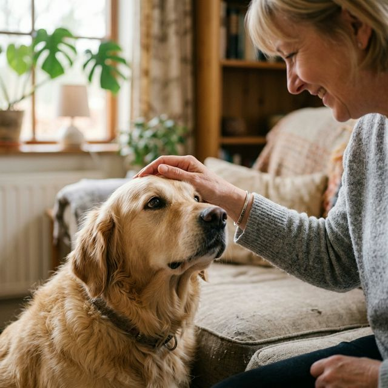

Dedicated to finding the perfect home for every animal in need.
At Pet Adoption Center, we believe that every animal deserves a life filled with love, comfort, and care. Our mission is to bridge the gap between rescue animals and loving families, ensuring a seamless and joyful transition for both.
Since our inception in 2010, we have successfully rehomed over 5,000 animals, ranging from playful kittens to loyal senior dogs. Our team of dedicated volunteers and veterinarians work tirelessly to ensure every pet is healthy and happy.

We treat every animal with the same love we give our own pets.
We ensure that every adopter is fully prepared for their new companion.
Transparent processes and honest assessments of every animal's needs.